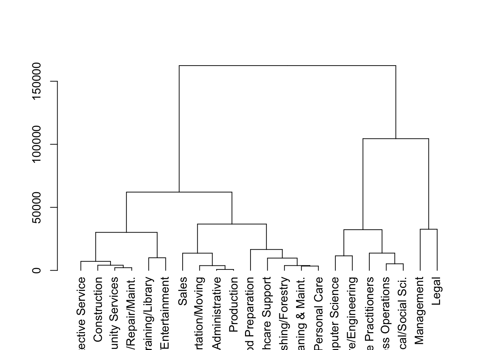
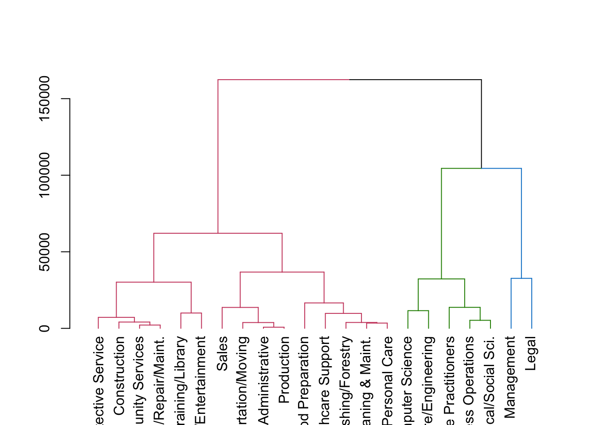

Sobre os dados
Para este webinar vamos usar 3 datasets:
- O primeiro sobre a satisfação e lealdade de clientes;
- O segundo sobre compras de produtos (para realizar segmentação de
mercado);
- O último dataset sobre salários de diferentes profissões (para
agrupamento de profissões com crescimento de salários similares).
Você pode baixar os dados
aqui.
Carregando pacotes
library(tidyverse)
library(dendextend) # para colorir os agrupamentos do cluster hirárquico
library(cluster) #para usar função pam
library(cowplot) #para plotar vários gráficos juntos
Segmentação de clientes - Exemplo 1
Vamos começar com um exemplo simples de segmentação de clientes,
usando apenas dois atributos: a satisfação do cliente e a sua
lealdade.
customers <- read.csv("data5/customers.csv")
customers %>%
ggplot(aes(Satisfaction, Loyalty))+
geom_point(size=2)
customers <- scale(customers)
customers_df <- as.tibble(customers)
model <- kmeans(customers_df, centers = 2)
cluster_km <- model$cluster
customers_df %>%
mutate(cluster = cluster_km) %>%
ggplot(aes(Satisfaction, Loyalty, color = factor(cluster)))+
geom_point(size=3)

Para escolher o número ideal de clusters, podemos usar o método do
“Elbow”. Para isto, vamos criar primeiramente uma função que facilite a
criação de modelos k-means, logo iremos usar esta função
criar_k_means() para gerar os valores das somas dos
quadrados para diferentes valores de k.
criar_k_means <- function(k){
model <- kmeans(customers_df, centers = k)
model$tot.withinss
}
k = 10
elbow <- data.frame(k=1:k)
elbow$tot.withinss <- 0
for(i in 1:k) {
elbow$tot.withinss[i] <- criar_k_means(i)
}
elbow %>%
ggplot(aes(k, tot.withinss))+
geom_line(color="red")+
geom_point(size=4, color="red")+
scale_x_continuous(breaks=1:10)
Similarmente, usaremos um segundo método para identificar o número
ideal de cluster, o método da silueta.
library(cluster)
criar_siluetas <- function(k){
model <- pam(customers_df, k = k)
model$silinfo$avg.width
}
k = 10
sil_df <- data.frame(k=2:k)
sil_df$sil_width <- 0
for(i in 2:k) {
sil_df$sil_width[i-1] <- criar_siluetas(i)
}
sil_df %>%
ggplot(aes(k, sil_width))+
geom_line(color="#e32d91")+
geom_point(size=4, color="#e32d91")+
scale_x_continuous(breaks=1:10)

Segmentação de clientes - Exemplo 2
calcular a distância euclidiana entre clientes
clientes <- readRDS("data5/ws_customers.rds")
dist_clientes <- dist(clientes)
criar uma análise usando o algoritmo da distância completa:
ch_clientes <- hclust(dist_clientes, method = "complete")
graficar o dendograma:
plot(ch_clientes)

Criar uma asignação de clusters no valor de altura h = 15000
clust_clientes <- cutree(ch_clientes, h=15000)
Gerar um dataframe com os clientes segmentados
clientes_segmentados <- mutate(clientes, cluster = clust_clientes)
Calcular o número de clientes que fazer parte de cada cluster
count(clientes_segmentados, cluster)
## cluster n
## 1 1 5
## 2 2 29
## 3 3 5
## 4 4 6
colorir o dendograma com base no valor de cutoff
dend_clientes <- as.dendrogram(ch_clientes)
dend_colorido <- color_branches(dend_clientes, h=15000)
plot(dend_colorido)

calcular a média para cada cluster
clientes_segmentados %>%
group_by(cluster) %>%
summarise_all(mean)
## # A tibble: 4 × 4
## cluster Milk Grocery Frozen
## <int> <dbl> <dbl> <dbl>
## 1 1 16950 12891. 991.
## 2 2 2513. 5229. 1796.
## 3 3 10452. 22551. 1355.
## 4 4 1250. 3917. 10889.
Com base neste resultado, podemos inferir que:
Os clientes do cluster 1 gastaram mais em Leite do que os outros
grupos
Os clientes do cluster 3 gastaram mais em mercado do que os
outros grupos
os clientes do cluster 4 gastaram mais em frozen iogurte do que
os outros grupos
Os clientes do cluster 2 gastaram consideravelmente menos do que
os outros clusters
Agrupamento de profissões a partir do crescimento dos salários
Vamos carregar os dados:
oes <- readRDS("data5/oes.rds")
Clustering hierárquico
passos necessários conforme o método
# Calculate Euclidean distance between the occupations
dist_oes <- dist(oes, method = "euclidean")
# Generate an average linkage analysis
hc_oes <- hclust(dist_oes, method = "average")
# Create a dendrogram object from the hclust variable
dend_oes <- as.dendrogram(hc_oes)
# Plot the dendrogram
plot(dend_oes)

# Color branches by cluster formed from the cut at a height of 100000
dend_colored <- color_branches(dend_oes, h = 100000)
# Plot the colored dendrogram
plot(dend_colored)

agora, vamos ‘recortar’ a árvore e vamos incluir o agrupamento num
novo dataframe.
# Use rownames_to_column to move the rownames into a column of the data frame
df_oes <- rownames_to_column(as.data.frame(oes), var = 'occupation')
# Create a cluster assignment vector at h = 100,000
cut_oes <- cutree(hc_oes, h = 100000)
# Generate the segmented the oes data frame
clust_oes <- mutate(df_oes, cluster = cut_oes)
# Create a tidy data frame by gathering the year and values into two columns
gathered_oes <- gather(data = clust_oes,
key = year,
value = mean_salary,
-occupation, -cluster)
Agora vamos plotar os grupos de clusters para cada ano:
# Plot the relationship between mean_salary and year and color the lines by the assigned cluster
clust3plot <- ggplot(gathered_oes, aes(x = year, y = mean_salary, color = factor(cluster))) +
geom_line(aes(group = occupation))+
labs(title = "Clustering Hierárquico com k = 3")
clust3plot

K-means
O algortimo do k-means segue a lógica descrita no último webinar. O
primeiro passo é criar duas funções customizadas, que nos ajudarão a
extrair as informações necessárias para a escolha do número de \(k\) grupos.
# Use map_dbl to run many models with varying value of k (centers)
tot_withinss <- map_dbl(1:10, function(k){
model <- kmeans(x = oes, centers = k)
model$tot.withinss
})
# Generate a data frame containing both k and tot_withinss
elbow_df <- data.frame(
k = 1:10,
tot_withinss = tot_withinss
)
# Plot the elbow plot
ggplot(elbow_df, aes(x = k, y = tot_withinss)) +
geom_line() +
scale_x_continuous(breaks = 1:10)

O interessante é que o método do Elbow sugere 2 clusters,
diferentemente do clustering hierárquico que sugeria 3.
cluster_2 <- kmeans(oes, centers = 2)
clust2_oes <- mutate(df_oes, cluster = cluster_2$cluster)
clust2plot <- clust2_oes %>%
pivot_longer(2:16, names_to = "year",
values_to = "mean_salary") %>%
ggplot(aes(year, mean_salary, color = factor(cluster)))+
geom_line(aes(group=occupation))+
labs(title = "Kmeans com k = 2")
clust2plot

Vamos usar a largura média da silhueta (ASW) para tentar decidir qual
número de clusters é o melhor.
# Use map_dbl to run many models with varying value of k
sil_width <- map_dbl(2:10, function(k){
model <- pam(oes, k = k)
model$silinfo$avg.width
})
# Generate a data frame containing both k and sil_width
sil_df <- data.frame(
k = 2:10,
sil_width = sil_width
)
# Plot the relationship between k and sil_width
ggplot(sil_df, aes(x = k, y = sil_width)) +
geom_line(color = "#e32d91", size =1) +
scale_x_continuous(breaks = 2:10)
Neste método, quanto mais alto for o valor de um referido cluster,
melhor, ou seja, este método sugere que o melhor número de clusters
seria 7, pois obteve o valor mais alto de largura, seguido pelo cluster
k = 2.
cluster_7 <- kmeans(oes, centers = 7)
clust7_oes <- mutate(df_oes, cluster = cluster_7$cluster)
clust7plot <- clust7_oes %>%
pivot_longer(2:16, names_to = "year",
values_to = "mean_salary") %>%
ggplot(aes(year, mean_salary, color = factor(cluster)))+
geom_line(aes(group=occupation))+
labs(title = "Kmeans com k = 7")
clust7plot
Vamos comparar os três resultados:
plot_grid(clust2plot, clust3plot, clust7plot, ncol = 3, label_size = 10)

LS0tCnRpdGxlOiAiV2ViaW5hciA1IC0gTWFjaGluZSBMZWFybmluZyIKc3VidGl0bGU6ICJNw6l0b2RvcyBOw6NvIFN1cGVydmlzaW9uYWRvczogQ2x1c3RlcmluZyIKb3V0cHV0OiAKICBodG1sX2RvY3VtZW50OgogICAgY29kZV9kb3dubG9hZDogdHJ1ZQotLS0KCmBgYHtyIHNldHVwLCBpbmNsdWRlPUZBTFNFfQprbml0cjo6b3B0c19jaHVuayRzZXQoZWNobyA9IFRSVUUsIG1lc3NhZ2UgPSBGQUxTRSwgd2FybmluZyA9IEZBTFNFKQpgYGAKCiMjIFNvYnJlIG9zIGRhZG9zCgpQYXJhIGVzdGUgd2ViaW5hciB2YW1vcyB1c2FyIDMgZGF0YXNldHM6IAoKKiBPIHByaW1laXJvIHNvYnJlIGEgc2F0aXNmYcOnw6NvIGUgbGVhbGRhZGUgZGUgY2xpZW50ZXM7CiogTyBzZWd1bmRvIHNvYnJlIGNvbXByYXMgZGUgcHJvZHV0b3MgKHBhcmEgcmVhbGl6YXIgc2VnbWVudGHDp8OjbyBkZSBtZXJjYWRvKTsKKiBPIMO6bHRpbW8gZGF0YXNldCBzb2JyZSBzYWzDoXJpb3MgZGUgZGlmZXJlbnRlcyBwcm9maXNzw7VlcyAocGFyYSBhZ3J1cGFtZW50byBkZSBwcm9maXNzw7VlcyBjb20gY3Jlc2NpbWVudG8gZGUgc2Fsw6FyaW9zIHNpbWlsYXJlcykuCgpWb2PDqiBwb2RlIGJhaXhhciBvcyBkYWRvcwpgYGB7ciBlY2hvPUZBTFNFfQp4ZnVuOjpwa2dfbG9hZDIoYygnaHRtbHRvb2xzJywgJ21pbWUnKSkKeGZ1bjo6ZW1iZWRfZGlyKCJkYXRhNS8iLCB0ZXh0ID0gImFxdWkuIikKCmBgYAoKIyMgQ2FycmVnYW5kbyBwYWNvdGVzCgpgYGB7ciBwYWNvdGVzfQoKbGlicmFyeSh0aWR5dmVyc2UpCmxpYnJhcnkoZGVuZGV4dGVuZCkgIyBwYXJhIGNvbG9yaXIgb3MgYWdydXBhbWVudG9zIGRvIGNsdXN0ZXIgaGlyw6FycXVpY28KbGlicmFyeShjbHVzdGVyKSAjcGFyYSB1c2FyIGZ1bsOnw6NvIHBhbQpsaWJyYXJ5KGNvd3Bsb3QpICNwYXJhIHBsb3RhciB2w6FyaW9zIGdyw6FmaWNvcyBqdW50b3MKCmBgYAoKCiMjIFNlZ21lbnRhw6fDo28gZGUgY2xpZW50ZXMgLSBFeGVtcGxvIDEKClZhbW9zIGNvbWXDp2FyIGNvbSB1bSBleGVtcGxvIHNpbXBsZXMgZGUgc2VnbWVudGHDp8OjbyBkZSBjbGllbnRlcywgdXNhbmRvIGFwZW5hcyBkb2lzIGF0cmlidXRvczogYSBzYXRpc2Zhw6fDo28gZG8gY2xpZW50ZSBlIGEgc3VhIGxlYWxkYWRlLgoKYGBge3J9CgpjdXN0b21lcnMgPC0gcmVhZC5jc3YoImRhdGE1L2N1c3RvbWVycy5jc3YiKQoKY3VzdG9tZXJzICU+JSAKICBnZ3Bsb3QoYWVzKFNhdGlzZmFjdGlvbiwgTG95YWx0eSkpKwogIGdlb21fcG9pbnQoc2l6ZT0yKQoKCmN1c3RvbWVycyA8LSBzY2FsZShjdXN0b21lcnMpCgpjdXN0b21lcnNfZGYgPC0gYXMudGliYmxlKGN1c3RvbWVycykKCm1vZGVsIDwtIGttZWFucyhjdXN0b21lcnNfZGYsIGNlbnRlcnMgPSAyKQoKY2x1c3Rlcl9rbSA8LSBtb2RlbCRjbHVzdGVyCgpjdXN0b21lcnNfZGYgJT4lIAogIG11dGF0ZShjbHVzdGVyID0gY2x1c3Rlcl9rbSkgJT4lIAogIGdncGxvdChhZXMoU2F0aXNmYWN0aW9uLCBMb3lhbHR5LCBjb2xvciA9IGZhY3RvcihjbHVzdGVyKSkpKwogIGdlb21fcG9pbnQoc2l6ZT0zKQoKYGBgCgpQYXJhIGVzY29saGVyIG8gbsO6bWVybyBpZGVhbCBkZSBjbHVzdGVycywgcG9kZW1vcyB1c2FyIG8gbcOpdG9kbyBkbyAiRWxib3ciLiBQYXJhIGlzdG8sIHZhbW9zIGNyaWFyIHByaW1laXJhbWVudGUgdW1hIGZ1bsOnw6NvIHF1ZSBmYWNpbGl0ZSBhIGNyaWHDp8OjbyBkZSBtb2RlbG9zIGstbWVhbnMsIGxvZ28gaXJlbW9zIHVzYXIgZXN0YSBmdW7Dp8OjbyBgY3JpYXJfa19tZWFucygpYCBwYXJhIGdlcmFyIG9zIHZhbG9yZXMgZGFzIHNvbWFzIGRvcyBxdWFkcmFkb3MgcGFyYSBkaWZlcmVudGVzIHZhbG9yZXMgZGUgYGtgLgoKYGBge3J9Cgpjcmlhcl9rX21lYW5zIDwtIGZ1bmN0aW9uKGspewogIG1vZGVsIDwtIGttZWFucyhjdXN0b21lcnNfZGYsIGNlbnRlcnMgPSBrKQogIG1vZGVsJHRvdC53aXRoaW5zcwp9CgprID0gMTAKCmVsYm93IDwtIGRhdGEuZnJhbWUoaz0xOmspCmVsYm93JHRvdC53aXRoaW5zcyA8LSAwCgoKZm9yKGkgaW4gMTprKSB7CiAgZWxib3ckdG90LndpdGhpbnNzW2ldIDwtIGNyaWFyX2tfbWVhbnMoaSkKfQoKZWxib3cgJT4lIAogIGdncGxvdChhZXMoaywgdG90LndpdGhpbnNzKSkrCiAgZ2VvbV9saW5lKGNvbG9yPSJyZWQiKSsKICBnZW9tX3BvaW50KHNpemU9NCwgY29sb3I9InJlZCIpKwogIHNjYWxlX3hfY29udGludW91cyhicmVha3M9MToxMCkKCmBgYAoKU2ltaWxhcm1lbnRlLCB1c2FyZW1vcyB1bSBzZWd1bmRvIG3DqXRvZG8gcGFyYSBpZGVudGlmaWNhciBvIG7Dum1lcm8gaWRlYWwgZGUgY2x1c3RlciwgbyBtw6l0b2RvIGRhIHNpbHVldGEuCgpgYGB7cn0KbGlicmFyeShjbHVzdGVyKQoKY3JpYXJfc2lsdWV0YXMgPC0gZnVuY3Rpb24oayl7CiAgbW9kZWwgPC0gcGFtKGN1c3RvbWVyc19kZiwgayA9IGspCiAgbW9kZWwkc2lsaW5mbyRhdmcud2lkdGgKfQoKayA9IDEwCgpzaWxfZGYgPC0gZGF0YS5mcmFtZShrPTI6aykKc2lsX2RmJHNpbF93aWR0aCA8LSAwCgoKZm9yKGkgaW4gMjprKSB7CiAgc2lsX2RmJHNpbF93aWR0aFtpLTFdIDwtIGNyaWFyX3NpbHVldGFzKGkpCn0KCnNpbF9kZiAlPiUgCiAgZ2dwbG90KGFlcyhrLCBzaWxfd2lkdGgpKSsKICBnZW9tX2xpbmUoY29sb3I9IiNlMzJkOTEiKSsKICBnZW9tX3BvaW50KHNpemU9NCwgY29sb3I9IiNlMzJkOTEiKSsKICBzY2FsZV94X2NvbnRpbnVvdXMoYnJlYWtzPTE6MTApCmBgYAoKCgojIyBTZWdtZW50YcOnw6NvIGRlIGNsaWVudGVzIC0gRXhlbXBsbyAyCgpjYWxjdWxhciBhIGRpc3TDom5jaWEgZXVjbGlkaWFuYSBlbnRyZSBjbGllbnRlcwoKYGBge3J9CmNsaWVudGVzIDwtIHJlYWRSRFMoImRhdGE1L3dzX2N1c3RvbWVycy5yZHMiKQoKZGlzdF9jbGllbnRlcyA8LSBkaXN0KGNsaWVudGVzKQpgYGAKCmNyaWFyIHVtYSBhbsOhbGlzZSB1c2FuZG8gbyBhbGdvcml0bW8gZGEgZGlzdMOibmNpYSBjb21wbGV0YToKCmBgYHtyfQpjaF9jbGllbnRlcyA8LSBoY2x1c3QoZGlzdF9jbGllbnRlcywgbWV0aG9kID0gImNvbXBsZXRlIikKYGBgCgpncmFmaWNhciBvIGRlbmRvZ3JhbWE6CgpgYGB7cn0KcGxvdChjaF9jbGllbnRlcykKCmBgYAoKQ3JpYXIgdW1hIGFzaWduYcOnw6NvIGRlIGNsdXN0ZXJzIG5vIHZhbG9yIGRlIGFsdHVyYSBoID0gMTUwMDAKCmBgYHtyfQpjbHVzdF9jbGllbnRlcyA8LSBjdXRyZWUoY2hfY2xpZW50ZXMsIGg9MTUwMDApCmBgYAoKR2VyYXIgdW0gZGF0YWZyYW1lIGNvbSBvcyBjbGllbnRlcyBzZWdtZW50YWRvcwoKYGBge3J9CmNsaWVudGVzX3NlZ21lbnRhZG9zIDwtIG11dGF0ZShjbGllbnRlcywgY2x1c3RlciA9IGNsdXN0X2NsaWVudGVzKQpgYGAKCkNhbGN1bGFyIG8gbsO6bWVybyBkZSBjbGllbnRlcyBxdWUgZmF6ZXIgcGFydGUgZGUgY2FkYSBjbHVzdGVyCgpgYGB7cn0KCmNvdW50KGNsaWVudGVzX3NlZ21lbnRhZG9zLCBjbHVzdGVyKQpgYGAKCmNvbG9yaXIgbyBkZW5kb2dyYW1hIGNvbSBiYXNlIG5vIHZhbG9yIGRlIGN1dG9mZgoKYGBge3J9CgpkZW5kX2NsaWVudGVzIDwtIGFzLmRlbmRyb2dyYW0oY2hfY2xpZW50ZXMpCmRlbmRfY29sb3JpZG8gPC0gY29sb3JfYnJhbmNoZXMoZGVuZF9jbGllbnRlcywgaD0xNTAwMCkKCnBsb3QoZGVuZF9jb2xvcmlkbykKYGBgCgoKY2FsY3VsYXIgYSBtw6lkaWEgcGFyYSBjYWRhIGNsdXN0ZXIKCmBgYHtyfQoKY2xpZW50ZXNfc2VnbWVudGFkb3MgJT4lIAogIGdyb3VwX2J5KGNsdXN0ZXIpICU+JSAKICBzdW1tYXJpc2VfYWxsKG1lYW4pCmBgYAoKQ29tIGJhc2UgbmVzdGUgcmVzdWx0YWRvLCBwb2RlbW9zIGluZmVyaXIgcXVlOgoKKiBPcyBjbGllbnRlcyBkbyBjbHVzdGVyIDEgZ2FzdGFyYW0gbWFpcyBlbSBMZWl0ZSBkbyBxdWUgb3Mgb3V0cm9zIGdydXBvcwoKKiBPcyBjbGllbnRlcyBkbyBjbHVzdGVyIDMgZ2FzdGFyYW0gbWFpcyBlbSBtZXJjYWRvIGRvIHF1ZSBvcyBvdXRyb3MgZ3J1cG9zCgoqIG9zIGNsaWVudGVzIGRvIGNsdXN0ZXIgNCBnYXN0YXJhbSBtYWlzIGVtIGZyb3plbiBpb2d1cnRlIGRvIHF1ZSBvcyBvdXRyb3MgZ3J1cG9zCgoqIE9zIGNsaWVudGVzIGRvIGNsdXN0ZXIgMiBnYXN0YXJhbSBjb25zaWRlcmF2ZWxtZW50ZSBtZW5vcyBkbyBxdWUgb3Mgb3V0cm9zIGNsdXN0ZXJzCgoKCiMjIEFncnVwYW1lbnRvIGRlIHByb2Zpc3PDtWVzIGEgcGFydGlyIGRvIGNyZXNjaW1lbnRvIGRvcyBzYWzDoXJpb3MKClZhbW9zIGNhcnJlZ2FyIG9zIGRhZG9zOgoKYGBge3Igb2VzfQpvZXMgPC0gcmVhZFJEUygiZGF0YTUvb2VzLnJkcyIpCmBgYAoKIyMjIENsdXN0ZXJpbmcgaGllcsOhcnF1aWNvCgpwYXNzb3MgbmVjZXNzw6FyaW9zIGNvbmZvcm1lIG8gbcOpdG9kbwoKYGBge3J9CiMgQ2FsY3VsYXRlIEV1Y2xpZGVhbiBkaXN0YW5jZSBiZXR3ZWVuIHRoZSBvY2N1cGF0aW9ucwpkaXN0X29lcyA8LSBkaXN0KG9lcywgbWV0aG9kID0gImV1Y2xpZGVhbiIpCgojIEdlbmVyYXRlIGFuIGF2ZXJhZ2UgbGlua2FnZSBhbmFseXNpcyAKaGNfb2VzIDwtIGhjbHVzdChkaXN0X29lcywgbWV0aG9kID0gImF2ZXJhZ2UiKQoKIyBDcmVhdGUgYSBkZW5kcm9ncmFtIG9iamVjdCBmcm9tIHRoZSBoY2x1c3QgdmFyaWFibGUKZGVuZF9vZXMgPC0gYXMuZGVuZHJvZ3JhbShoY19vZXMpCgojIFBsb3QgdGhlIGRlbmRyb2dyYW0KcGxvdChkZW5kX29lcykKCiMgQ29sb3IgYnJhbmNoZXMgYnkgY2x1c3RlciBmb3JtZWQgZnJvbSB0aGUgY3V0IGF0IGEgaGVpZ2h0IG9mIDEwMDAwMApkZW5kX2NvbG9yZWQgPC0gY29sb3JfYnJhbmNoZXMoZGVuZF9vZXMsIGggPSAxMDAwMDApCgojIFBsb3QgdGhlIGNvbG9yZWQgZGVuZHJvZ3JhbQpwbG90KGRlbmRfY29sb3JlZCkKYGBgCgoKYWdvcmEsIHZhbW9zICdyZWNvcnRhcicgYSDDoXJ2b3JlIGUgdmFtb3MgaW5jbHVpciBvIGFncnVwYW1lbnRvIG51bSBub3ZvIGRhdGFmcmFtZS4KCmBgYHtyfQoKIyBVc2Ugcm93bmFtZXNfdG9fY29sdW1uIHRvIG1vdmUgdGhlIHJvd25hbWVzIGludG8gYSBjb2x1bW4gb2YgdGhlIGRhdGEgZnJhbWUKZGZfb2VzIDwtIHJvd25hbWVzX3RvX2NvbHVtbihhcy5kYXRhLmZyYW1lKG9lcyksIHZhciA9ICdvY2N1cGF0aW9uJykKCiMgQ3JlYXRlIGEgY2x1c3RlciBhc3NpZ25tZW50IHZlY3RvciBhdCBoID0gMTAwLDAwMApjdXRfb2VzIDwtIGN1dHJlZShoY19vZXMsIGggPSAxMDAwMDApCgojIEdlbmVyYXRlIHRoZSBzZWdtZW50ZWQgdGhlIG9lcyBkYXRhIGZyYW1lCmNsdXN0X29lcyA8LSBtdXRhdGUoZGZfb2VzLCBjbHVzdGVyID0gY3V0X29lcykKCiMgQ3JlYXRlIGEgdGlkeSBkYXRhIGZyYW1lIGJ5IGdhdGhlcmluZyB0aGUgeWVhciBhbmQgdmFsdWVzIGludG8gdHdvIGNvbHVtbnMKZ2F0aGVyZWRfb2VzIDwtIGdhdGhlcihkYXRhID0gY2x1c3Rfb2VzLCAKICAgICAgICAgICAgICAgICAgICAgICBrZXkgPSB5ZWFyLCAKICAgICAgICAgICAgICAgICAgICAgICB2YWx1ZSA9IG1lYW5fc2FsYXJ5LCAKICAgICAgICAgICAgICAgICAgICAgICAtb2NjdXBhdGlvbiwgLWNsdXN0ZXIpCgpgYGAKCkFnb3JhIHZhbW9zIHBsb3RhciBvcyBncnVwb3MgZGUgY2x1c3RlcnMgcGFyYSBjYWRhIGFubzoKCmBgYHtyfQoKIyBQbG90IHRoZSByZWxhdGlvbnNoaXAgYmV0d2VlbiBtZWFuX3NhbGFyeSBhbmQgeWVhciBhbmQgY29sb3IgdGhlIGxpbmVzIGJ5IHRoZSBhc3NpZ25lZCBjbHVzdGVyCgpjbHVzdDNwbG90IDwtIGdncGxvdChnYXRoZXJlZF9vZXMsIGFlcyh4ID0geWVhciwgeSA9IG1lYW5fc2FsYXJ5LCBjb2xvciA9IGZhY3RvcihjbHVzdGVyKSkpICsgCiAgICBnZW9tX2xpbmUoYWVzKGdyb3VwID0gb2NjdXBhdGlvbikpKwogIGxhYnModGl0bGUgPSAiQ2x1c3RlcmluZyBIaWVyw6FycXVpY28gY29tIGsgPSAzIikKCmNsdXN0M3Bsb3QKYGBgCgoKIyMjIEstbWVhbnMKCk8gYWxnb3J0aW1vIGRvIGstbWVhbnMgc2VndWUgYSBsw7NnaWNhIGRlc2NyaXRhIG5vIMO6bHRpbW8gd2ViaW5hci4gTyBwcmltZWlybyBwYXNzbyDDqSBjcmlhciBkdWFzIGZ1bsOnw7VlcyBjdXN0b21pemFkYXMsIHF1ZSBub3MgYWp1ZGFyw6NvIGEgZXh0cmFpciBhcyBpbmZvcm1hw6fDtWVzIG5lY2Vzc8OhcmlhcyBwYXJhIGEgZXNjb2xoYSBkbyBuw7ptZXJvIGRlICRrJCBncnVwb3MuCgpgYGB7cn0KCiMgVXNlIG1hcF9kYmwgdG8gcnVuIG1hbnkgbW9kZWxzIHdpdGggdmFyeWluZyB2YWx1ZSBvZiBrIChjZW50ZXJzKQp0b3Rfd2l0aGluc3MgPC0gbWFwX2RibCgxOjEwLCAgZnVuY3Rpb24oayl7CiAgbW9kZWwgPC0ga21lYW5zKHggPSBvZXMsIGNlbnRlcnMgPSBrKQogIG1vZGVsJHRvdC53aXRoaW5zcwp9KQoKIyBHZW5lcmF0ZSBhIGRhdGEgZnJhbWUgY29udGFpbmluZyBib3RoIGsgYW5kIHRvdF93aXRoaW5zcwplbGJvd19kZiA8LSBkYXRhLmZyYW1lKAogIGsgPSAxOjEwLAogIHRvdF93aXRoaW5zcyA9IHRvdF93aXRoaW5zcwopCgojIFBsb3QgdGhlIGVsYm93IHBsb3QKZ2dwbG90KGVsYm93X2RmLCBhZXMoeCA9IGssIHkgPSB0b3Rfd2l0aGluc3MpKSArCiAgZ2VvbV9saW5lKCkgKwogIHNjYWxlX3hfY29udGludW91cyhicmVha3MgPSAxOjEwKQpgYGAKCk8gaW50ZXJlc3NhbnRlIMOpIHF1ZSBvIG3DqXRvZG8gZG8gRWxib3cgc3VnZXJlIDIgY2x1c3RlcnMsIGRpZmVyZW50ZW1lbnRlIGRvIGNsdXN0ZXJpbmcgaGllcsOhcnF1aWNvIHF1ZSBzdWdlcmlhIDMuCgpgYGB7cn0KY2x1c3Rlcl8yIDwtIGttZWFucyhvZXMsIGNlbnRlcnMgPSAyKQoKY2x1c3QyX29lcyA8LSBtdXRhdGUoZGZfb2VzLCBjbHVzdGVyID0gY2x1c3Rlcl8yJGNsdXN0ZXIpCgpjbHVzdDJwbG90IDwtIGNsdXN0Ml9vZXMgJT4lIAogIHBpdm90X2xvbmdlcigyOjE2LCBuYW1lc190byA9ICJ5ZWFyIiwgCiAgICAgICAgICAgICAgIHZhbHVlc190byA9ICJtZWFuX3NhbGFyeSIpICU+JSAKICBnZ3Bsb3QoYWVzKHllYXIsIG1lYW5fc2FsYXJ5LCBjb2xvciA9IGZhY3RvcihjbHVzdGVyKSkpKwogIGdlb21fbGluZShhZXMoZ3JvdXA9b2NjdXBhdGlvbikpKwogIGxhYnModGl0bGUgPSAiS21lYW5zIGNvbSBrID0gMiIpCgpjbHVzdDJwbG90CgpgYGAKCgpWYW1vcyB1c2FyIGEgbGFyZ3VyYSBtw6lkaWEgZGEgc2lsaHVldGEgKEFTVykgcGFyYSB0ZW50YXIgZGVjaWRpciBxdWFsIG7Dum1lcm8gZGUgY2x1c3RlcnMgw6kgbyBtZWxob3IuCgpgYGB7cn0KCgojIFVzZSBtYXBfZGJsIHRvIHJ1biBtYW55IG1vZGVscyB3aXRoIHZhcnlpbmcgdmFsdWUgb2YgawpzaWxfd2lkdGggPC0gbWFwX2RibCgyOjEwLCAgZnVuY3Rpb24oayl7CiAgbW9kZWwgPC0gcGFtKG9lcywgayA9IGspCiAgbW9kZWwkc2lsaW5mbyRhdmcud2lkdGgKfSkKCiMgR2VuZXJhdGUgYSBkYXRhIGZyYW1lIGNvbnRhaW5pbmcgYm90aCBrIGFuZCBzaWxfd2lkdGgKc2lsX2RmIDwtIGRhdGEuZnJhbWUoCiAgayA9IDI6MTAsCiAgc2lsX3dpZHRoID0gc2lsX3dpZHRoCikKCiMgUGxvdCB0aGUgcmVsYXRpb25zaGlwIGJldHdlZW4gayBhbmQgc2lsX3dpZHRoCmdncGxvdChzaWxfZGYsIGFlcyh4ID0gaywgeSA9IHNpbF93aWR0aCkpICsKICBnZW9tX2xpbmUoY29sb3IgPSAiI2UzMmQ5MSIsIHNpemUgPTEpICsKICBzY2FsZV94X2NvbnRpbnVvdXMoYnJlYWtzID0gMjoxMCkKCmBgYAoKTmVzdGUgbcOpdG9kbywgcXVhbnRvIG1haXMgYWx0byBmb3IgbyB2YWxvciBkZSB1bSByZWZlcmlkbyBjbHVzdGVyLCBtZWxob3IsIG91IHNlamEsIGVzdGUgbcOpdG9kbyBzdWdlcmUgcXVlIG8gbWVsaG9yIG7Dum1lcm8gZGUgY2x1c3RlcnMgc2VyaWEgNywgcG9pcyBvYnRldmUgbyB2YWxvciBtYWlzIGFsdG8gZGUgbGFyZ3VyYSwgc2VndWlkbyBwZWxvIGNsdXN0ZXIgayA9IDIuCgpgYGB7cn0KCmNsdXN0ZXJfNyA8LSBrbWVhbnMob2VzLCBjZW50ZXJzID0gNykKCmNsdXN0N19vZXMgPC0gbXV0YXRlKGRmX29lcywgY2x1c3RlciA9IGNsdXN0ZXJfNyRjbHVzdGVyKQoKY2x1c3Q3cGxvdCA8LSBjbHVzdDdfb2VzICU+JSAKICBwaXZvdF9sb25nZXIoMjoxNiwgbmFtZXNfdG8gPSAieWVhciIsIAogICAgICAgICAgICAgICB2YWx1ZXNfdG8gPSAibWVhbl9zYWxhcnkiKSAlPiUgCiAgZ2dwbG90KGFlcyh5ZWFyLCBtZWFuX3NhbGFyeSwgY29sb3IgPSBmYWN0b3IoY2x1c3RlcikpKSsKICBnZW9tX2xpbmUoYWVzKGdyb3VwPW9jY3VwYXRpb24pKSsKICBsYWJzKHRpdGxlID0gIkttZWFucyBjb20gayA9IDciKQoKY2x1c3Q3cGxvdApgYGAKCgpWYW1vcyBjb21wYXJhciBvcyB0csOqcyByZXN1bHRhZG9zOgoKYGBge3IgZmlnLndpZHRoPTE0LCBmaWcuaGVpZ2h0PTR9CgoKcGxvdF9ncmlkKGNsdXN0MnBsb3QsIGNsdXN0M3Bsb3QsIGNsdXN0N3Bsb3QsIG5jb2wgPSAzLCBsYWJlbF9zaXplID0gMTApCmBgYAoK